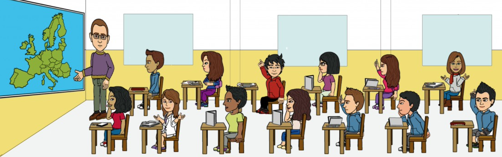

Agenda de qualificacions

Visió general
Cal fer una aplicació (de nom registreNotesVostreNom) per a guardar les notes dels alumnes, de diverses assignatures i avaluacions.
Per cada alumne cal saber el nom, telèfon, adreça (carrer, número i codi postal) i qualificacions: notes que ha tret en cada avaluació de cada assignatura. Hi ha 3 avaluacions i les assignatures són PRG, BDA i EDD (pots posar una matriu de 3x3 dins la classe Alumne).
Fes un programa amb un bucle que mostre el següent menú i execute l’acció que li vages indicant:
| Bash | |
|---|---|
Què ha de fer cada opció?
Cada opció cridarà a la funció corresponent passant com a paràmetre el vector d’alumnes.
- Demanarà les dades personals d'un alumne (no les notes) i les guardarà. Caldrà buscar una posició lliure del vector on posar l’alumne.
Això vol dir que no es crearan els alumnes a priori, sinó que es crearà un alumne cada vegada que es demanen les dades d’un nou alumne. Per tant, el vector d’alumnes serà un vector inicialment buit. Es crearan en donar-los d'alta.
- Preguntarà quina avaluació i assignatura i anirà demanant per teclat les notes corresponents de cada alumne donat d'alta (anirà mostrant el nom) i guardarà eixes notes.
- Preguntarà pel nom de l’alumne i mostrarà totes les seues dades. S’imagina que els alumnes tenen tots un nom diferent.
- Pregunta el nom d'un alumne, mostrarà les seues dades, demanarà les noves dades a modificar (nom, telèfon i adreça) i modificarà eixe alumne en la llista.
- Pregunta el nom d'un alumne, mostrarà les seues dades, preguntarà quina assignatura i quina avaluació, quina nota i la modificarà.
- Pregunta el nom d'un alumne, mostrarà les seues dades, preguntarà si està segur d'esborrar i, si és així, l'esborrarà de la llista.
- Pregunta si està segur i, si és així, esborrarà tota la llista.
- Mostrarà els percentatges d'aprovats, així:
| Av1 | Av2 | Av3 | Mitjana | |
|---|---|---|---|---|
| PRG | 70 | 60 | 40 | 56 |
| BDA | 80 | 70 | 50 | 66 |
| EDD | 60 | 50 | 60 | 56 |
| TOTAL | 70 | 60 | 50 | 60 |
Per exemple, el valor 70 per a PRG-AV1 vol dir que el 70% dels alumnes matriculats han aprovat l’assignatura de PRG en l’avaluació 1. 1. El programa acaba